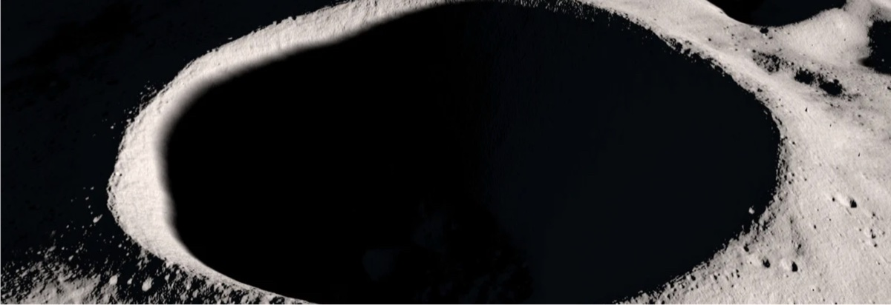

MSc Deep Learning
I run tutorials, answer students' questions and help with the practical exercises: neural network basics, optimisation and modern architectures.
I teach deep learning at Imperial College London and ETH Zürich.
I run tutorials, answer students' questions and help with the practical exercises: neural network basics, optimisation and modern architectures.
I teach the last third of the Space Data course. My block covers the basics of deep learning (MLPs, CNNs and U-Nets) and then applies them to a real problem: removing noise from images of the Moon's permanently shadowed regions, crater floors that never get direct sunlight.
The exercises build on HORUS, a method by Ben Moseley and Valentin Bickel for these images. Clearer images of the shadowed regions help with mapping resources and planning landing sites.
